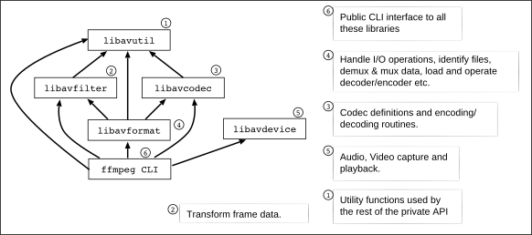

Foreword
This document is more or less a run down of my experience with making a codec for FFmpeg with the intent of letting future developers have a slightly easier time of figuring out where things are.
During my time with FFmpeg, I have only worked with developing a video codec up till now. Hence, my knowlegde is more or less limited to libavcodec, libavformat, and libavutil.
If you have any suggestions, please shoot me an email at aghorui (at) teknik (dot) io or open an issue on github.
This document is under public domain.
Introduction
The FFmpeg suite is a program largely written in C. It’s code base is extremely large consisting of countless codecs, filters, formats, display/audio facilities, etc.
There are 3 sub-libraries that one is mostly concerned with while writing a codec:
libavcodec, the Encoder/Decoder library,
libavformat, the file format and audio/video demuxer library, and
libavutil, utility library used by other libraries in the FFmpeg suite.
Other libraries that are of lesser concern are:
libavfilter, the audio/video data transformation (filtering) library. A filter (scale) is needed if you want to convert between pixel formats (discussed later)).
libswscale, included by the scale filter. Includes pixel format conversion routines.
Developing for FFmpeg, or any other library for that matter, requires one to go through and read a large amount of source code in order to actually introduce a component or change in it, maybe moreso in FFmpeg. This document will outline some of the functions that one shall go through, and explain some things that are not directly mentioned within inline comments or documentation.
The Encoding/Decoding (Transcoding) Process

The man page of the FFmpeg CLI interface provides a good introduction to how ffmpeg works.
The FFmpeg CLI performs the following operations in the whole transcoding process.
ffmpeg -i in_file out_file
libavformat: Probing: The input file is probed to determine the file format.
libavformat: Read Header: The header is read to get values like duration, pixel format, metadata, number of frames, aspect ratio, bitrate etc.
libavformat: Read Packet:
Timestamps
Timestamps are simply a numerical quantity that represents time. Used in the following contexts:
pts - Presentation Timestamp: Time at which a frame is presented to the user.
dts - Decode Timestamp: Time at which
Note for Developers with a Background in Object Oriented Languages
C does not have classes and similar provisions in the language, however, a very similar method of programming is observable over here in the form of context structs and functions. Storage structs are used to handle repetitive patterns such as for a set of decoder functions, parameters etc.